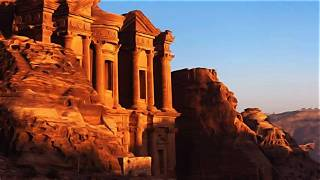

Nombre: Petra
País: Jordania
Año de construcción: Aproximadamente siglo IV a. C.
Petra fue la capital del antiguo reino nabateo. Esta ciudad fue esculpida directamente en enormes montañas de roca rosada y se convirtió en un importante centro comercial entre Asia, África y Europa. Permaneció oculta durante siglos hasta ser redescubierta en 1812 por el explorador Johann Ludwig Burckhardt.
Muchas escenas de la película Indiana Jones y la Última Cruzada fueron grabadas en Petra, especialmente frente al famoso edificio conocido como "El Tesoro".
Siguiente Maravilla →